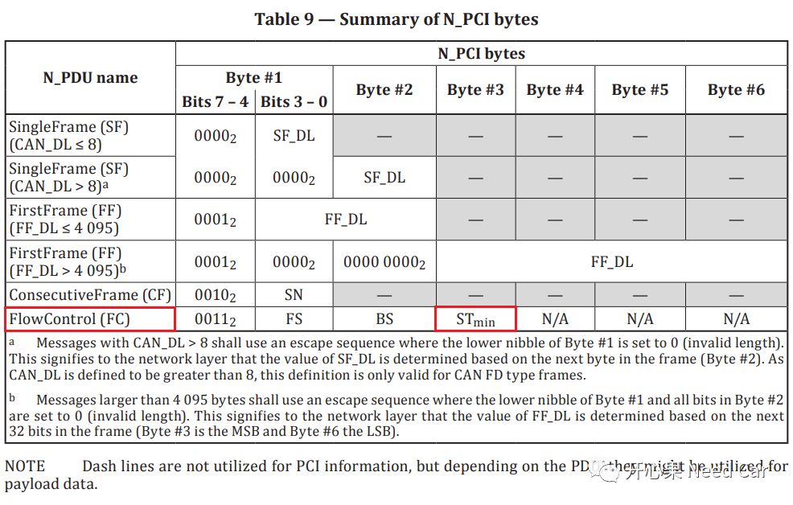
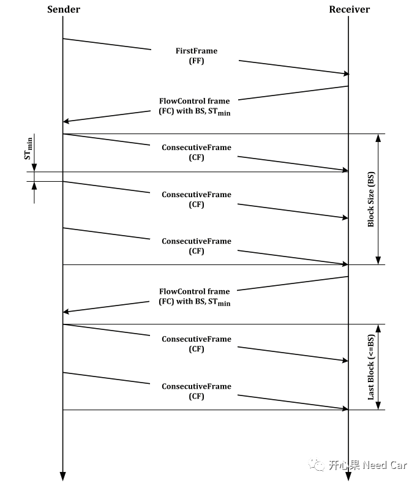
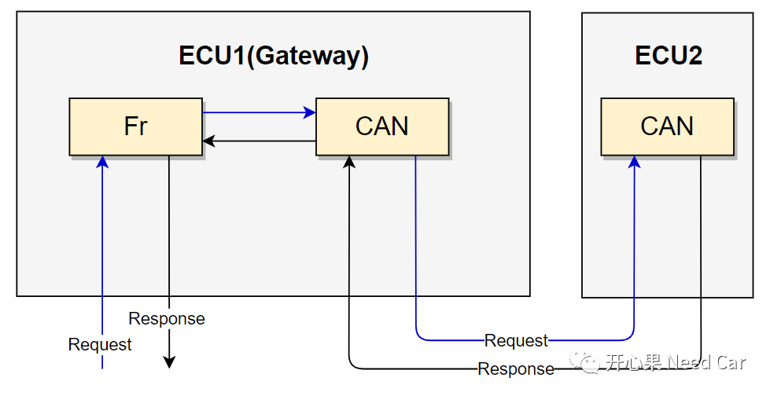
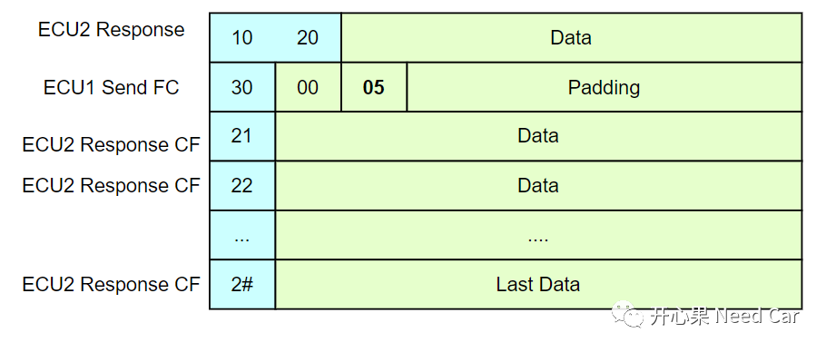
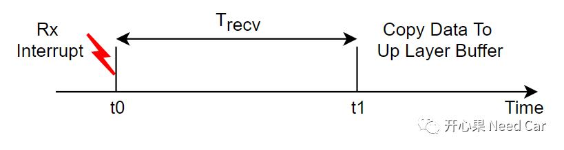
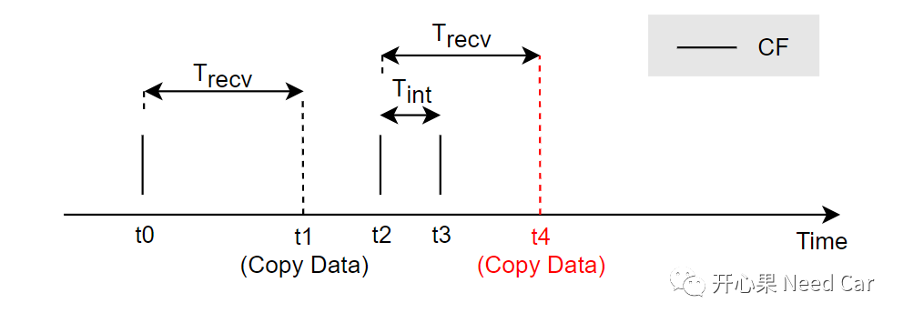
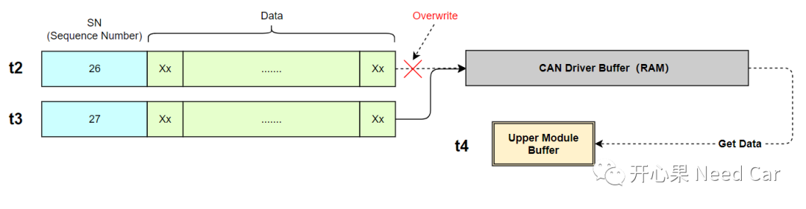

诊断刷写过程中，尤其多帧传输时，不知大家是否遇到过Bug，本文分享一个接收丢帧问题。该问题与STmin相关，先回顾一下什么是STmin。
15765-2协议中规定了CAN诊断N-PDU类型，其中，流控帧（FC：Flow Control）包含STmin，N-PDU的格式规范如下所示：

STmin：Separation Time minimum，表示两个连续帧(CF:Consecutive Frame)的最小发送间隔。不同的接收端，处理能力不同，会要求发送端的发送间隔，以此满足接收端的处理能力。比如：STmin = 5，意思是发送端最小5ms的间隔发送一帧CF。如果STmin = 0，则发送端可以以自身最大的能力发送CF。
注意：是两个连续CF的最小发送间隔，FC和第一个CF之间的间隔不受此时间参数约束。
BS：BlockSize，表示发送端一次可以传输的最大CF数量。此参数主要考虑接收端的接收缓存区大小，如果接收端可以完整的将发送端的一个块（比如：4k）全部接收，则可以不设置BS（BS = 0）;如果接收端无法一次接收发送端一个Block数据，即：发送端一个Block数据量超过了接收端接收缓存区大小，则接收端需要告诉发送端，接收端自身接收数据大小的能力，需要设置BS，比如：BS = 100，发送端一次最大能发送100个CF（可以＜100）。
流控机制如下所示：

ECU2的升级，需要通过网关（ECU1）路由诊断的请求（Request）和响应（Response），如下所示：

在某些工况下，发现ECU2响应连续帧（CF:Consecutive Frame ）时，ECU1无法将ECU2响应的连续帧路由出去，即：无法发送到Flexray总线。
示例：
ECU2开始响应多帧数据；
ECU1发送流控信息，其中STmin = 5，说明ECU1告诉ECU2，当前ECU1的接收能力弱，ECU2发送CF时，不要发送过快，连续帧之间的间隔最小5ms；
ECU2响应CF帧时，没有按照STmin的要求发送，间隔＜5ms（实际不足1ms）;
ECU2多帧发送完成，ECU1没有将ECU2发送来的多帧数据由CAN总线路由到Flexray总线。
示意如下所示：

我们知道，不管使用中断方式接收报文还是Polling方式接收报文，上层模块Copy底层接收的数据需要时间。
t0时刻，Rx Interrupt发生，数据缓存到底层硬件缓存区，同时通知上层Copy数据；
t1时刻，上层模块开始Copy数据，从中断发生到上层完成数据Copy用时Trecv。对于Trecv的用时，因代码的实现情况可能有所不同。本文问题排查发现，Trecv ≈ 2.58ms，这里的目标上层是CanTp层，也就是说：从进入接收中断例程到通知CanTp模块Copy数据用时约2.58ms（注意：本文项目并没有使用0x28服务关闭通信）。
如下所示：

中断过快导致丢帧
既然数据Copy到目标上层需要时间，如果在此期间接收中断再次发生会带来什么影响呢？
t0时刻，Rx Interrupt发生，数据1缓存到底层硬件缓存区A；
t1时刻，上层模块将缓存区A中的数据取出；
t2时刻，Rx Interrupt发生，数据2缓存到底层硬件缓存区A；
t3时刻，Rx Interrupt发生，数据3缓存到底层硬件缓存区A，由于上层模块还没有及时取出数据2，数据3又接收到缓存区A，导致数据3覆盖掉数据2；
t4时刻，上层模块再次去缓存区A取数据，此时读取的数据是数据3，而不是数据2，所以，目标上层模块没有接收到数据2，丢帧发生。
如下所示：

如果接收中断时间Tint＜Trecv，将会导致接收数据丢帧。t3时刻数据覆盖（Overwrite）t2时刻数据，示意如下：

问题是清晰的，ECU2的响应没有满足ECU1的STmin要求（CF发送间隔≥5ms），所以问题的修复不难：ECU2按照ECU1的STmin要求发送连续帧（CF）。
至此，本文给出了第一小段问题的一种答案。发送端连续帧发送过快，可能会导致接收端丢帧，进而导致刷写失败。
假设使用Classic CAN，通信速率500Kbps，1ms大概会发送3帧报文，如果使用中断接收方式，总线满载使用工况下，300us左右就可产生一次接收中断，如果上层模块不能在300us的时间内将数据Copy完成，将会导致丢帧。所以，程序升级（刷写）过程中，需要关注STmin，过快会导致丢帧，过慢会影响刷写效率。
本文的诊断接收报文配置成BASIC模式，即：同一个CAN Driver Buffer，接收多个CAN ID对应的报文。虽然底层RAM区配置成了FIFO模式，但是FIFO深度不够，Depth = 1。所以，如果要避免丢帧，Depth需要＞1。
程序刷写时，多帧传输过程中，会用功能寻址发送$3E 80维持诊断会话，如果采用中断接收方式，且物理寻址和功能寻址共用一个CAN Driver Buffer，也可能会导致丢帧。

参考资料
SIMPLE TITLE
Road vehicles — Diagnostic communication over Controller Area Network (DoCAN) —Part 2
往期精彩回顾